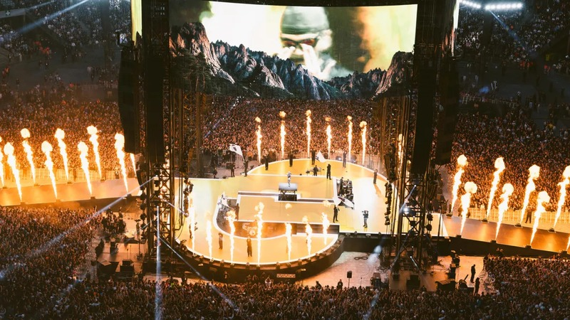

Du Vélodrome au Stade de France
Pour un rappeur marseillais, jouer au Vélodrome a une valeur particulière. Jul y est monté en 2022, puis il a visé encore plus grand.

Quatre rendez-vous marquants
- 4 juin 2022 : premier Stade Vélodrome, devant plus de 60 000 personnes.
- 26 avril 2025 : Stade de France, avec 97 816 spectateurs.
- 23 et 24 mai 2025 : retour au Vélodrome, plus de 150 000 personnes au total.
- Mai 2026 : nouveau Stade de France, plus de 100 000 personnes.
Le signe dans les tribunes
Ces chiffres placent Jul parmi les artistes français capables de remplir les plus grands stades du pays. Ses fans y retrouvent un geste qui lui est propre : le signe J-U-L.